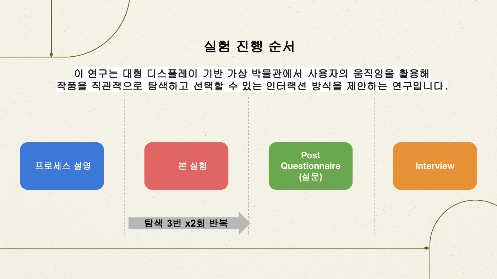
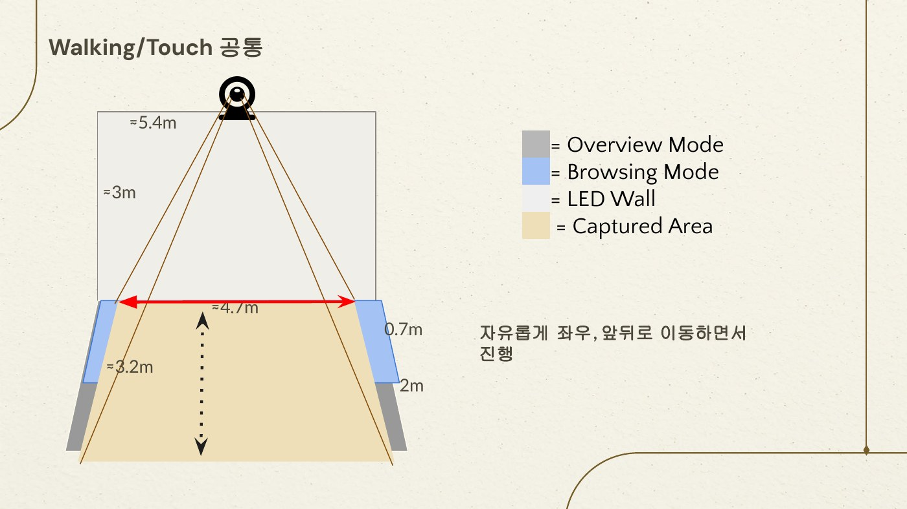
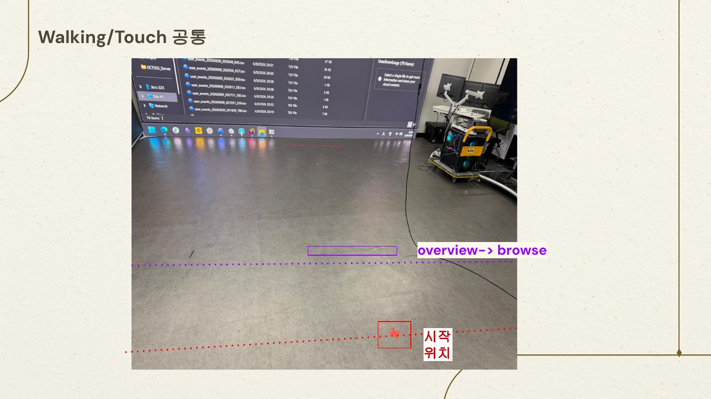
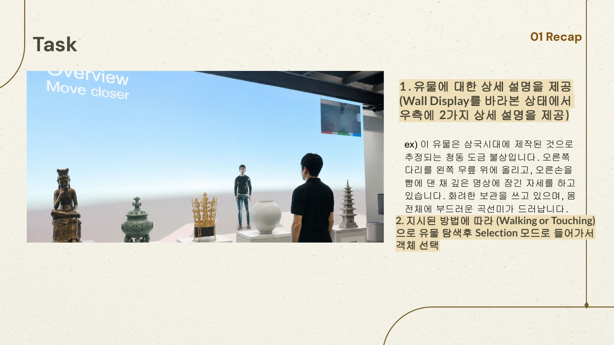
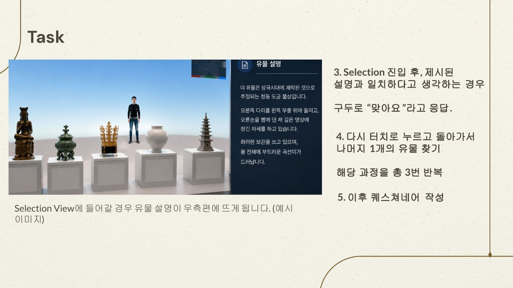
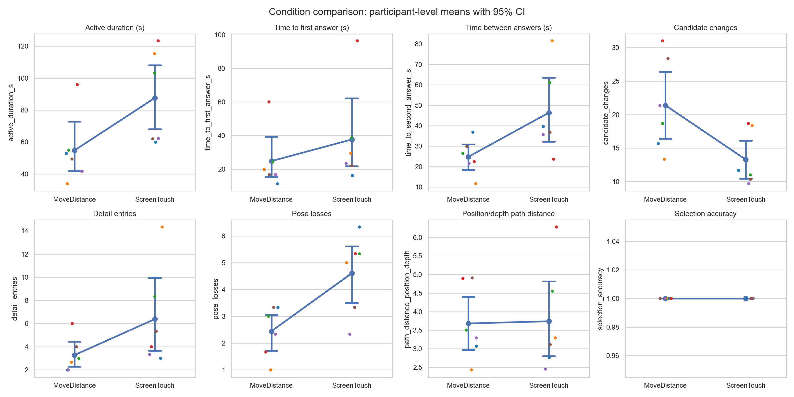
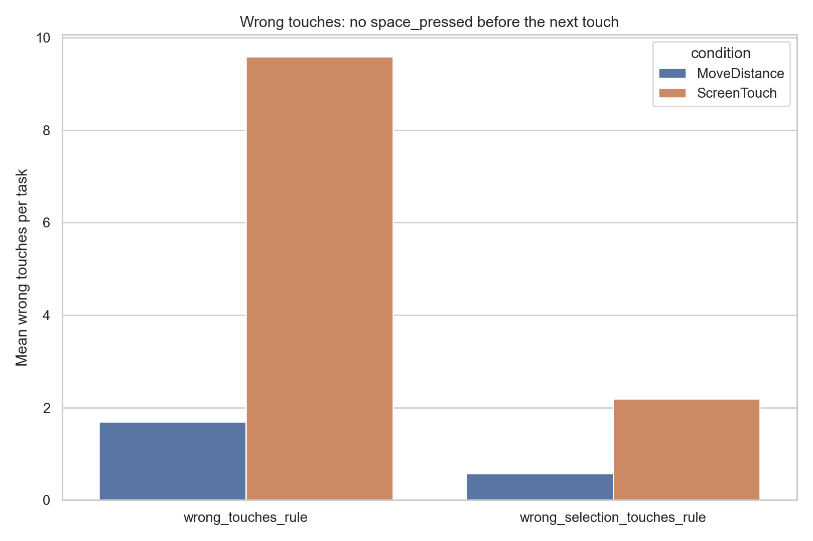
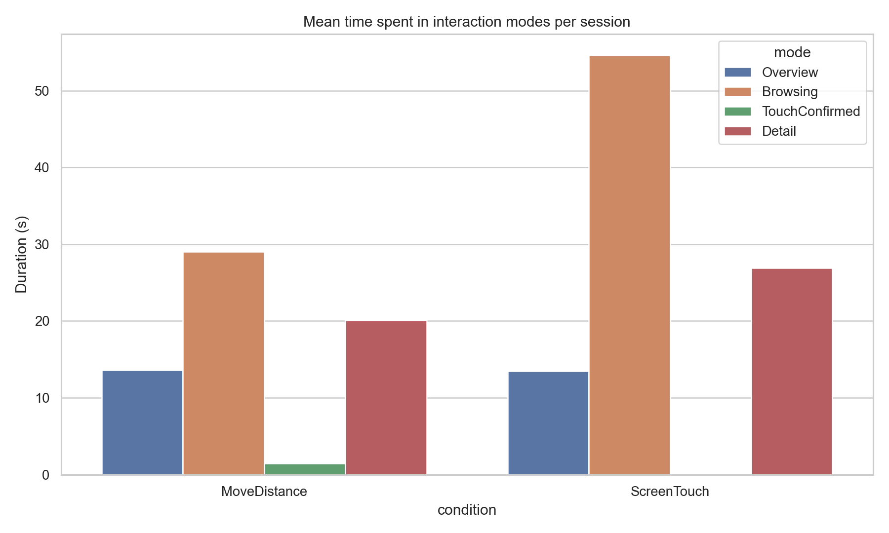
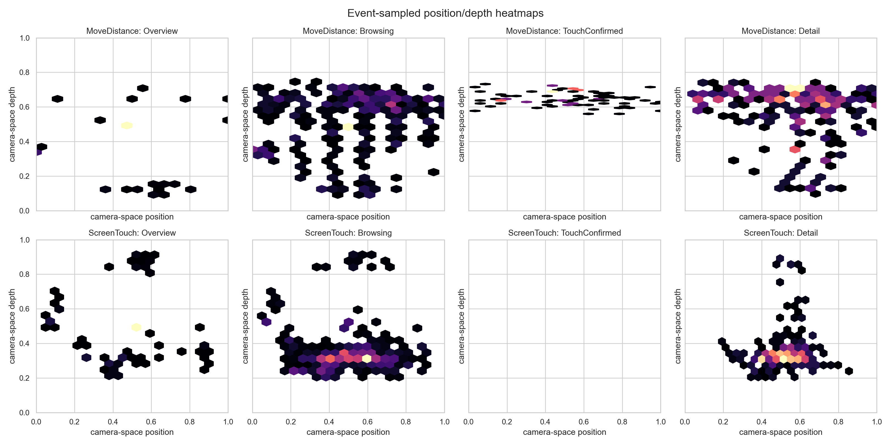

Counterbalanced order: three Move-first and three Touch-first.
03 Research & Evaluation
Walking changed
how people searched.
A within-subjects evaluation compared distance-driven semantic zoom with touch navigation across 36 sessions. Both conditions reached perfect accuracy, while ProxiWall completed tasks faster and with fewer wrong touches.
01 / MAIN RESEARCH QUESTION
How does distance-driven semantic zoom change the speed, errors, mode transitions, and movement patterns of artifact search on a wall display?
02 / COMPLETED STUDY
Six people.
Thirty-six sessions.
Each participant completed three MoveDistance sessions and three ScreenTouch sessions. Every session contained two correct verbal answers marked by space_pressed.
Six sessions per participant, three per condition.
Every space press represented a correct verbal answer.
Mode, candidate, touch, selection, pose, and position events.
03 / PARTICIPANT INSTRUCTIONS
One search task.
Two ways to navigate.
The study compared the same virtual-museum search task under two interaction conditions. Participants learned the shared space and answer procedure first, then practiced how Walking and Touch each controlled the interface.
Researchers explained the tracked area, common starting position, and the artifact-search task.
Participants completed three sessions using the first assigned interaction technique.
They repeated the same task structure with the other technique.
A post-study questionnaire and interview captured subjective differences between conditions.
SHARED SETUP
A large display and a tracked interaction area.
Participants could move freely from side to side and toward or away from the wall. Everyone began behind the Overview-to-Browsing threshold.
Camera-space interaction area in front of the display.
Approximate usable display width.
Farther position for seeing the collection at a glance.
Closer position for inspecting and navigating candidates.
ONE SESSION
Find two described artifacts and confirm both aloud.
Each session showed two detailed target descriptions. A verbal “맞아요” was logged as space_pressed and counted as a correct answer.
Read the two artifact descriptions shown on the right side of the wall.
Navigate candidates using the interaction technique assigned for the condition.
Enter Selection and compare the chosen artifact with the target description.
Say “맞아요” when it matches, then return and find the remaining target.
Walking controls semantic zoom.
- Forward / backward
Physical distance changes the view between Overview and Browsing.
- Left / right
Lateral body movement browses through artifact candidates.
- Touch candidate
A touch confirms the current candidate and enters Selection.
Touch regions control navigation.
- Touch left / right
The outer screen regions browse backward or forward through candidates.
- Touch Selection
The center screen region opens the current candidate in Selection.
- Touch again
After confirming a match aloud, another touch returns to continue searching.
ORIGINAL INSTRUCTION SLIDES
The protocol as participants saw it.
The slides below document the shared setup and condition-specific demonstrations used during briefing.
{kind=link}

PROTOCOL
Explain → Explore → Survey → Interview
Participants repeated three artifact-search sessions in each condition before completing the post questionnaire and interview.
{kind=link}

02 / ROOM SETUP{kind=link}

03 / START POSITION{kind=link}

04 / TASK RECAP{kind=link}

05 / ANSWER & REPEATCONDITION A
MoveDistance / Walking
{kind=link}
{kind=link}
{kind=link}
CONDITION B
ScreenTouch / Touch
{kind=link}
{kind=link}
{kind=link}
04 / KEY RESULTS
Faster search.
Fewer wrong touches.
Participant-level paired tests compare each person's mean performance in MoveDistance and ScreenTouch. With only six participants, effect sizes and paired trajectories remain important alongside p-values.
MoveDistance
42.02 s ScreenTouch · p=.026Both conditions
36 / 36 correct answers eachMoveDistance
9.58 ScreenTouch · p=.022/sessionMoveDistance
85.8% ScreenTouch · p=.006Walking scanned more candidates.
MoveDistance produced more candidate changes per session (21.39 vs 13.28), suggesting active spatial scanning rather than repeated screen operations.
Touch required more switching.
ScreenTouch produced more total transitions (19.72 vs 12.28) and more backward transitions (8.89 vs 3.61).
The largest gap was Browsing.
Average Browsing dwell was 29.04 s with MoveDistance and 54.62 s with ScreenTouch. Overview dwell remained nearly identical.




05 / HYPOTHESIS OUTCOMES
ProxiWall completed artifact-search tasks significantly faster.
Both conditions achieved 100% selection accuracy.
ProxiWall reduced wrong touches while encouraging more candidate scanning.
Movement coordinates are event-sampled camera-space values, not continuous physical meters.